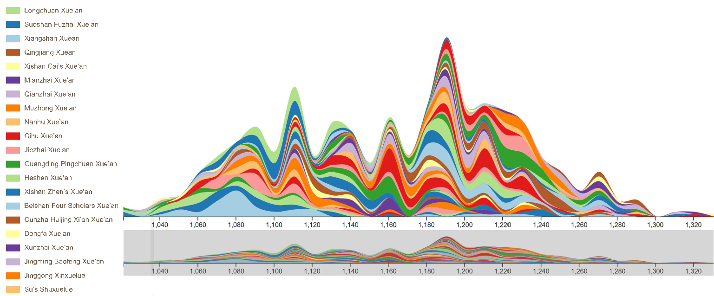
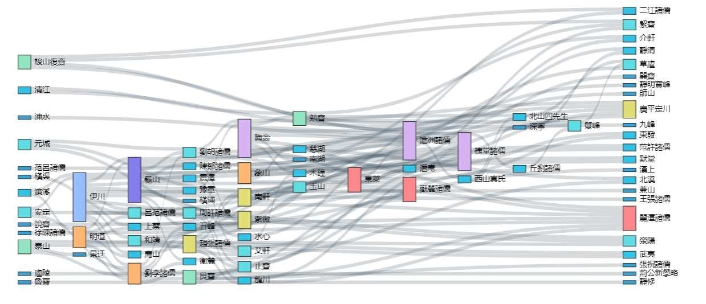
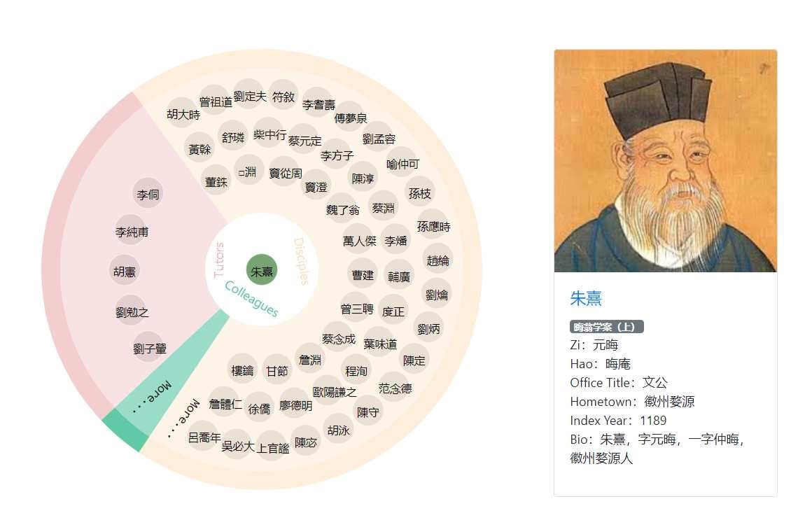

Abstract This paper aims to reconstruct Song-Yuan Xue’an into a knowledge graph and design a visualization-assisted and interactive reading system for it. It seeks to make this Chinese classical writing more understandable for the younger generation, and meanwhile to provide a useful indexlike instrument for humanities researchers. The paper presents two steps of reconstructing SongYuan Xue’an. First, the text is converted into a knowledge graph by extracting named entities of scholars, places, dates and their inter-relationships, to build a graph database with Neo4j platform. Second, three visualization tools are used to demonstrate the genealogy of philosophy schools and relationships among them.
Keyword visualization; Song-Yuan Xue’an; knowledge graph; Chinese classic literature
1 INTRODUCTION
Song-Yuan Xue’an (Scholarly Annals of Song and Yuan Dynasties) is a historical account of philosophers and their doctrines in Song and Yuan Dynasties of ancient China. It consists of nearly one hundred scholar cases, each of which records the biographies and academic contributions of a prominent scholar and his disciples.
Nowadays, it is difficult for the younger generation to understand complicated and large-volume Chinese classical writings through word-by-word reading. Meanwhile, modern researchers in humanities also need a knowledge-based visualization tool which can provide an overview of classic materials and help them formulate research questions. Therefor, to make traditional literature more accessible and understandable to both digital natives and humanities researchers, an interactive web-based system, with intuitive visualization functions and assisting tools for background knowledge, is necessary.
In fact, there are several research projects focusing on how to present historical and literary materials. Zhou et al. analyzed Tang poems and visualized the citation networks among poets(Zhou et al. 2019). Chen et al. built a linked data platform of Chinese Biographical Database and demonstrated the relations between people as a linked graph(Chen et al. 2019). Forlini et al. visualized the Bob Gibson collection of speculative fiction with radial tree graph organized by themes of the fictions(Forlini et al. 2016). Lee et al. analyzed the social networks in Shakespeare’s works with diagram(Lee and Lee 2017). Eve created an interactive game to help readers explore the Bible text(Eve 2007).
This paper introduces our work of reconstructing the Song-Yuan Xue’an into a knowledge graph upon which several visualization tools are designed for distant reading. To make the classical literature of 300 years ago more comprehensible to history novices, a historical chronology, an ancient bureaucratic hierarchy, and an administrative map of the Song Dynasty are imbedded to provides the temporal, official, and spatial background knowledge respectively for close reading.
2 INTERACTIVE VISUALIZATION TOOLS
First of all, we convert the text of the Song-Yuan Xue’an into a knowledge graph with two steps. In the first step, the scholars’ profiles, spatial-temporal data, and semantic relationships among them are recognized and extracted with regular expressions according to the structure of the text. Then, all the extracted entities are encoded into RDF triples according to the identified semantic relationships, and then stored into the Neo4j graph database.
We then implement three kinds of visualization tools to demonstrate the development and genealogy of the philosophy schools mentioned in the book. The first one is a streamgraph, representing the varying trend of scholar numbers over the time span of the Song and Yuan Dynasties. The second is a sankey diagram, illustrating the lineage relationships between a Neo-Confucianism school and those derived from it. The third is a pie chart where the center represents a specific scholar and three colored slices represent three group of people related to him: his tutors, disciples and colleagues respectively. All of these visualization tools are interactive, and users can traverse iteratively and explore the underneath knowledge graph.
Figure 1: Streamgraph of the number of Scholars in Song and Yuan Dynasties
Figure 2: Sankey diagram illustrating lineage relationships among philosophy schools
Figure 3: Pie chart demonstrating a scholar’s academic circle
3 SYSTEM FUNCTIONALITY
We implement four functions to assist in reading this comprehensive classical work: general search, distant reading, close reading, and semantic search. The general search functions like a search engine. The distant reading function contains three diagrams that provide an overview of SongYuan Xue’an. As mentioned above, the streamgraph demonstrates the evolution trend of the NeoConfucian schools over 400 years; and the sankey graph, together with a genealogy tree diagram, shows their origination and influences among each other. The interactive pie chart illustrates the persons related to a particular scholar. The close reading section re-organizes the original text with the semantic relationships extracted from the book, thus related entities of various types are aggregated on the subject that readers are paying attention to. For example, when a person is selected, the places he visited, the book titles he wrote and the official positions he ever took are retrieved from the knowledge graph automatically and displayed alongside his biology. The readers can invoke the embedded historical chronology, the official hierarchy, and the administrative map of Song Dynasty anytime when he has difficulties in understanding. The semantic search section provides a user-friendly interface to construct complicated semantic queries step by step to search exhaustively in the graph database.
4 CONCLUSION
How to make classic literature more accessible and understandable for both Internet generation and professional researchers is an important question in the pedagogy of the humanities. This project utilizes the knowledge graph and visualization techniques to reconstruct the classic work and make it comprehensible to touch-screen users, demonstrating the value of visualizations in digital humanities fields as a concordance-like tool for classics. The knowledge nodes, including persons, places, time periods, book titles, official titles are extracted from text and represented in RDF triples. With the auxiliary of the embedded hierarchical knowledge schemes, all the knowledge nodes can be aggregated in different granularity interactively to support the function switching from the distant reading to close reading. The coarse-grained knowledge nodes help form a bird-view comprehension of the huge-volume book, and the fine-grained knowledge nodes organizes the text in semantically related unit for close reading and supports complicate semantic search.
For future work, we plan to represent the whole Confucianism history from pre-Qin period to Qing Dynasty in knowledge graph, thus providing on the Internet a vivid interactive picture of Chinese Confucian lineage over two thousand years.
References
Chen, T., Liu, W., Shan, R., and Zhu, Q. (2019). Research on the application of knowledge graph in digital humanities. Journal of Library Science in China, (06):1–19.
Eve, E. (2007). All hope abandon: Biblical text and interactive fiction. Digital Humanities Quarterly, 1(2).
Forlini, S., Hinrichs, U., and Moynihan, B. (2016). The stuff of science fiction: an experiment in literary history. Digital Humanities Quarterly, 10(1).
Lee, J. and Lee, J. (2017). Shakespeare’s tragic social network; or why all the world’s a stage. Digital Humanities Quarterly, 11(2).
Zhou, L., Hong, L., and Gao, Z. (2019). Construction of knowledge graph of chinese tang poetry and design of intelligent knowledge services. Library And Information Service, 63(2):24–33.